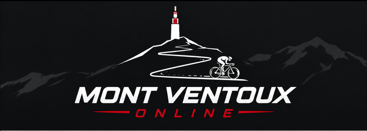
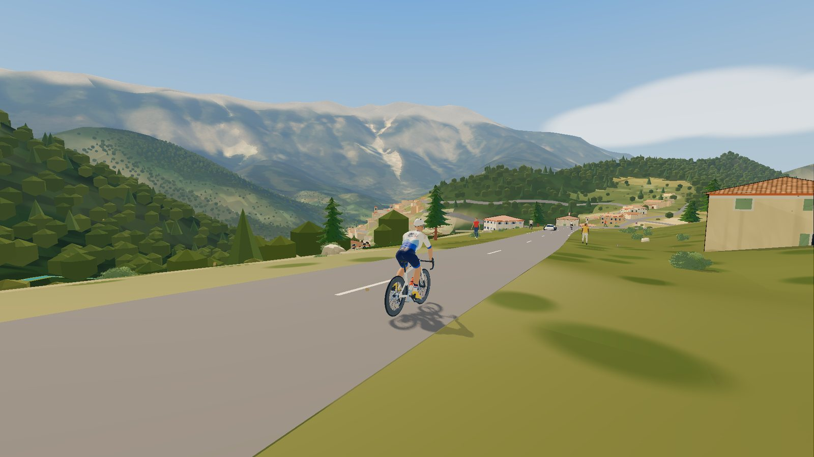
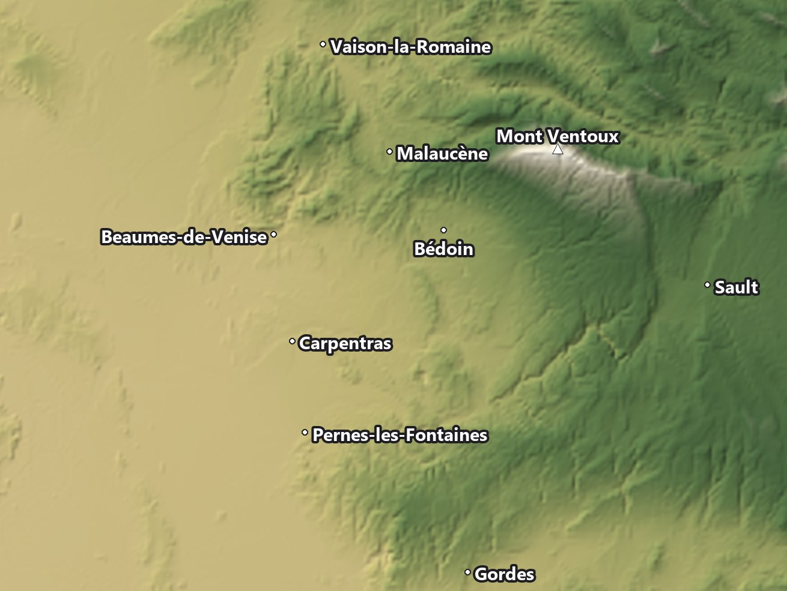
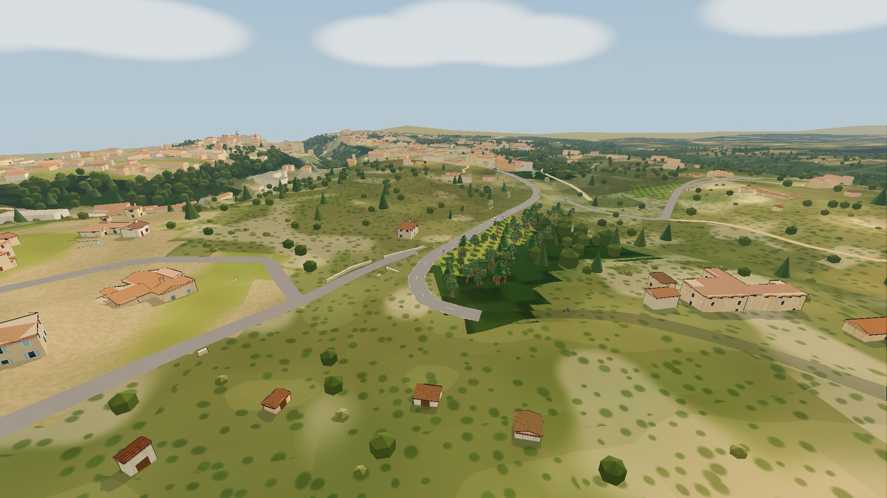
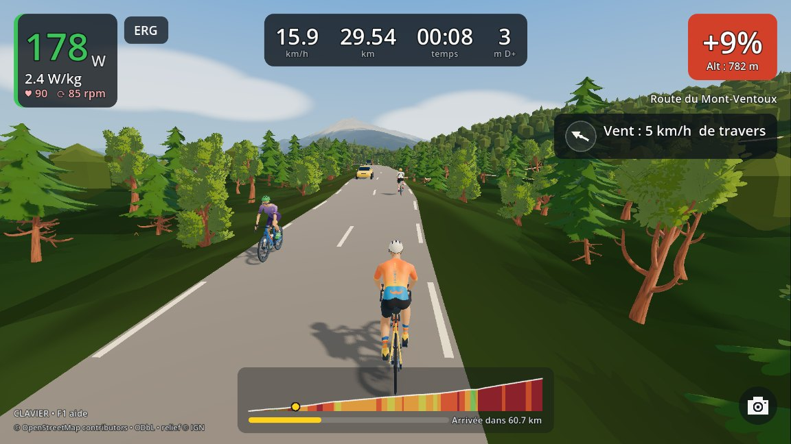
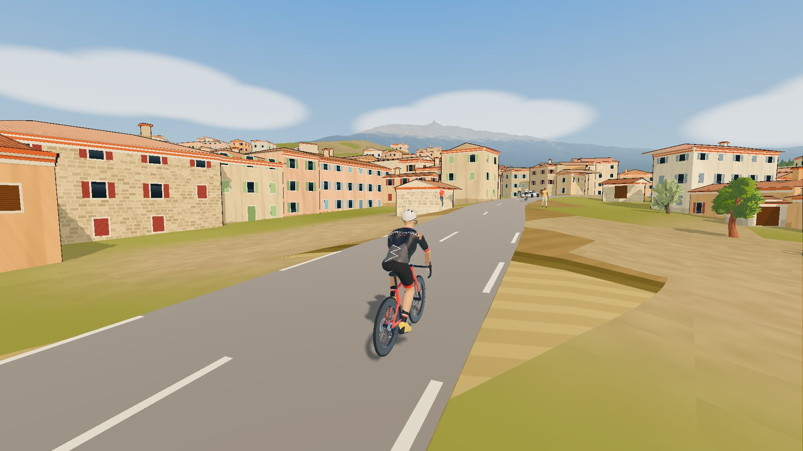

Les lacets de la forêt de Bédoin, le pierrier blanc au-dessus du Chalet Reynard, les gorges de la Nesque, Gordes perché sur son rocher, les villages des Dentelles : le Vaucluse reconstitué au mètre près, pour votre home trainer.
Être prévenu de la sortie Explorer la carteChaque montée est chronométrée de son village jusqu'à l'observatoire, avec les bornes kilométriques blanches et jaunes qui égrènent l'altitude et la pente du kilomètre suivant, comme sur la vraie route.

La voie royale : la forêt sans répit, puis le désert de pierres jusqu'au sommet.

La face nord, ses rampes irrégulières et le Mont Serein, le Géant en ligne de mire.

La plus douce, entre lavande et forêt, jusqu'au Chalet Reynard et aux six derniers kilomètres.
Les trois le même jour ? Le badge « Triple Géant » est pour vous.
De la balade d'une heure sur la voie verte à la journée autour du Géant : des sorties réelles, enregistrées sur le terrain, et leurs portions de 25 à 40 km pour une séance de home trainer. Choisissez un parcours sur la carte ou dans la liste pour le découvrir.

Images du jeu, telles qu'elles s'affichent sur votre écran.
 La traversée de Bédoin
La traversée de Bédoin
 Bédoin, 10 % dans la forêt
Bédoin, 10 % dans la forêt Le Géant en toile de fond
Le Géant en toile de fond La Via Venaissia en VTT
La Via Venaissia en VTTMont Ventoux Online reconstruit la Provence à partir des données publiques les plus précises : relief de l'IGN, bâtiments et routes d'OpenStreetMap, photographies aériennes. Pas un décor inventé : la vraie route.

Votre home trainer reçoit la pente de la route à chaque instant : la forêt de Bédoin, les rampes au-dessus du Chalet Reynard, la dernière ligne droite vers l'observatoire.
La difficulté se règle à votre niveau : une rampe à 10 % peut se ressentir à 5 %.

Chaque maison est posée à sa place, à sa hauteur réelle, avec ses volets, ses tuiles et ses commerces. Les panneaux d'entrée de village et les noms de rues défilent sous vos roues.

Garrigue de chênes verts et de pins sur les versants, gorges de la Nesque en corniche, vignes des Dentelles, Gordes perché sur son rocher : le paysage est celui que vous connaissez, jusqu'au marquage blanc de la route.

D'autres cyclistes à suivre ou à doubler (avec l'aspiration dans leur roue), des voitures, des tracteurs, des troupeaux, les cigales l'été.

En direct : le jeu récupère la vraie météo du Vaucluse au moment où vous roulez. Vent, rafales, température, nuages et pluie, avec un vent plus fort et plus froid au sommet du Ventoux qu'au pied.
Le vent compte vraiment : de face il vous freine, dans le dos il vous pousse, et les villages vous abritent. Envie d'autre chose ? Choisissez Grand beau, Mistral, Couvert ou Pluie avant de partir.

Des séances de 30 minutes à 1 h 30 (sweet spot, seuil, VO2max…) roulées sur le parcours de votre choix, en mode ERG. Des plans complets, dont « Préparer le Ventoux » en 8 semaines, votre forme et votre fatigue au jour le jour.

Le Ventoux grandit à chaque lacet. Ce qui vous attend là-haut, à 1 910 m ? Ce sera la surprise.
Chaque coup de pédale compte : l'expérience se gagne à l'effort, la régularité est récompensée. De Cyclotouriste à Légende du Ventoux, cinquante niveaux à gravir.

Le jeu est en cours de finalisation, avec un groupe de testeurs. Les tarifs ci-dessous sont ceux prévus à la sortie et peuvent encore évoluer. Écrivez-nous pour être prévenu de la sortie.
Sans engagement, résiliable à tout moment.
Mont Ventoux Online est en phase de test (bêta) avec un groupe de cyclistes. La sortie est prévue prochainement : écrivez-nous pour être prévenu dès qu'il sera téléchargeable.
Quatre parcours complets à rouler avec votre home trainer et votre cardio, sans limite de temps ni de nombre de sorties, les cinq premiers niveaux de progression, les badges et le défi du mois.
5,99 € par mois, sans engagement : vous résiliez quand vous voulez, l'accès reste ouvert jusqu'à la fin du mois payé. Votre progression est conservée. En version gratuite, votre expérience continue de compter au-delà du niveau 5 : en vous abonnant, vous retrouvez aussitôt le niveau réellement gagné.
Le jeu se connecte aux home trainers Bluetooth qui suivent la norme FTMS, ce qui est le cas de la plupart des modèles connectés récents.
Pas en permanence : les parcours sont installés sur votre PC et se roulent hors connexion. Le jeu vérifie votre abonnement en ligne au lancement ; cette vérification reste valable 7 jours, il suffit donc de se connecter au moins une fois par semaine. Internet sert aussi à la météo du jour.
Oui : le relief vient de l'IGN, les routes, les bâtiments et les commerces d'OpenStreetMap, les couleurs du sol des photographies aériennes de l'IGN. Les parcours sont de vraies sorties enregistrées au GPS.
Oui, au clavier, pour découvrir les parcours. Dans ce mode, aucune performance n'est enregistrée : c'est une sortie d'essai.
Pas pour l'instant : seulement sur PC Windows 10 ou 11.
 Mont Ventoux Online
Mont Ventoux Online